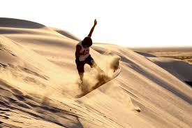
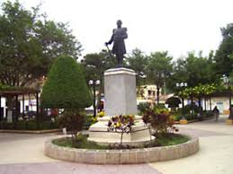
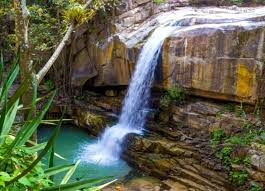
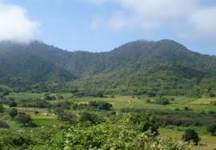
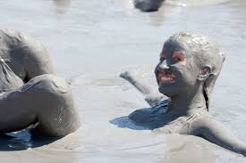
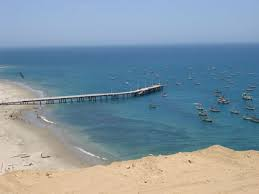
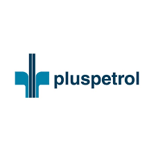
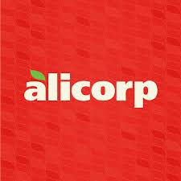
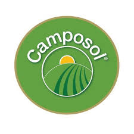

Lugares turísticos
Desierto de Sechura: Es el desierto más extenso del Perú. El cual es famoso por las diferentes actividades deportivas las cuales se pueden realizar en ese lugar, ya sea sandboard u otros, este lugar es perfecto para eso. 
Chulucanas: Es uno de los lugares no naturales de la región, un pueblo ubicado al norte de de la ciudad de Piura. Este pueblo continua las costumbres de ceramica de la cultura Tallan y hacen bellas obras con estas tecnicas. 
Catarata de Caracucho: Es uno de los lugares naturales más hermosos de Piura. Un lugar en el que te puedes dar un baño relajante en medio de la naturaleza. 
Parque Nacional Cerros de Amotape: Es uno de los parques más bellos de la región, la cual convina la flora y fauna de esta. En esta estan multiples animales conocidos del peru como el condor andino o el oso de anteojos. 
Pozas de barro: Un lugar natural para descanzar y ser cura medicinalmente por el barro. Conocida por lo relajante que deja a las personas y por los beneficios que da a la piel. 
Caleta El Ñuro: Lugar marino, en el cual se realizan diferentes actividades bajo el agua, como es el nado junto a las tortugas, avistamiento de ballenas, etc. 
Rol de agentes económicos en la Región
Los agentes económicos en Piura juegan un papel crucial en el desarrollo del mercado y el comercio regional al impulsar la producción, distribución y comercialización de bienes y servicios en la zona. Su participación activa en la economía local contribuye a la generación de empleo, al crecimiento de las empresas y al fortalecimiento de la cadena de valor en diversos sectores. Además, al promover la competitividad y la innovación, los agentes económicos de Piura estimulan el comercio regional, fomentando así el intercambio de productos y servicios tanto a nivel local como internacional. En otras palabras, su labor es fundamental para dinamizar la economía de Piura y potenciar su desarrollo comercial en la región.
Actividades Económicas
Piura, una región del norte de Perú, se destaca por una amplia gama de actividades económicas que abarcan sectores primarios, secundarios y terciarios. En el ámbito agrícola, la región es conocida por su producción de arroz, mango, plátano y caña de azúcar, que contribuyen significativamente a la economía local. Además, la pesca es una industria importante, especialmente en ciudades costeras como Paita y Talara, donde se destaca la captura de especies como el jurel y la caballa. En cuanto al sector secundario, Piura cuenta con una incipiente industria manufacturera, que abarca la producción de textiles, alimentos procesados y productos químicos, aunque aún se encuentra en desarrollo. Finalmente, en el sector terciario, el turismo juega un papel cada vez más importante, gracias a sus playas, áreas naturales protegidas y sitios arqueológicos, que atraen a visitantes nacionales e internacionales, generando empleo e ingresos para la región. Sin embargo, Piura también enfrenta desafíos económicos, como la falta de infraestructura adecuada y la dependencia de la agricultura y la pesca, lo que la hace vulnerable a fenómenos climáticos como El Niño. Además, la informalidad laboral y la falta de acceso a servicios básicos son problemas que requieren atención. A pesar de estos desafíos, el potencial económico de Piura es considerable, especialmente en áreas como el turismo sostenible y la agroindustria, que podrían impulsar un crecimiento económico más sólido y diversificado en el futuro.
empresas de la zona
Pluspetrol: Compañía de exploración y producción de Hidrocarburos. 
Petroperú: Transporte, refinación, distribución y comercialización de combustibles, además de otros derivados del petróleo.
Alicorp: Empresa de bienes de cosumo peruana. 
Camposol: Empresa peruana agroindustrial. 
Copeinca: Agencia pesquera Industrial con la mayor flota y cuota de pesca en el sector.
Rol del Gobierno Regional
El Gobierno Regional de Piura trabaja en el aspecto económico a través de diversas estrategias y programas destinados a impulsar el desarrollo sostenible y la competitividad de la región. Una de las principales iniciativas es la promoción de la inversión pública y privada en sectores clave como la agricultura, la pesca, la minería y el turismo. Para ello, se han implementado proyectos de infraestructura vial, riego y saneamiento que mejoran la conectividad y las condiciones de vida de la población, facilitando así el crecimiento económico. Además, el gobierno regional fomenta la capacitación y el acceso a financiamiento para emprendedores y pequeñas empresas, buscando fortalecer el tejido productivo local y generar empleo. Otra área de enfoque es la diversificación económica y la innovación. El gobierno regional de Piura ha impulsado programas de investigación y desarrollo en colaboración con universidades e institutos tecnológicos para mejorar la productividad y la calidad de los productos locales. Asimismo, se promueve el desarrollo de cadenas de valor y la incorporación de tecnologías avanzadas en la producción agrícola y pesquera. Estas acciones no solo buscan aumentar la competitividad de los productos piuranos en mercados nacionales e internacionales, sino también fomentar un desarrollo económico más inclusivo y sostenible, que beneficie a todas las comunidades de la región.